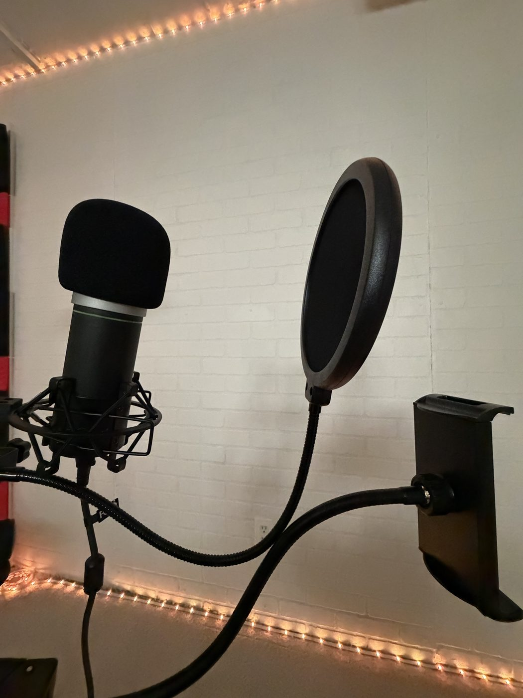

What Is a Track Mastering Service?
November 15, 2026
Your mix is finished — the vocals sit right, the instruments have their space, and the song sounds good in your headphones. So why does it still sound quieter, duller, or less finished than the songs next to it on a playlist? That last gap is what a track mastering service closes. Here is the plain answer to what mastering is, what it costs, and when it is worth paying a professional for it.

The short answer
A track mastering service takes your finished mix and gives it its final polish: balancing the overall tone, setting the loudness so the track holds up next to released music, making sure it translates from earbuds to a car stereo, and delivering it in the formats streaming platforms need. At Mohikontok Sound Lab, mastering starts at $75 per song, after the mix is done. It is the last step before release — not a second mix, and not a fix for a recording problem.
What a mastering engineer actually does
Loudness. A raw mix is usually quieter than released music. Mastering raises the level carefully, so the track competes on a playlist without being crushed flat. Streaming platforms normalize playback loudness, so a master that is simply louder is not better — it just gets turned down. The skill is in making the track feel full and punchy at the level it will actually be played.
Tonal balance. With fresh ears and accurate monitors in a treated room, the engineer hears what the mix room hid: a low end that is too heavy, a vocal that is slightly harsh, a high end that disappears on small speakers. Small, broad adjustments bring the track into balance without changing the mix you approved.
Consistency. On an EP or album, every track needs to sit at the same loudness and share the same tonal character, so the listener never reaches for the volume knob between songs. A mastering engineer listens across the whole release, not just one track at a time, and matches them to each other.
Sequencing and spacing. For a multi-track release, mastering sets the gaps between songs and the fades at the start and end of each track, so the release flows the way you intended it to be heard.
Formats and delivery. The engineer delivers the master in the files each platform needs — typically a high-resolution WAV for distribution — and checks that the files are clean: no clicks, dropouts, clipping, or truncated endings. The track that goes to the distributor is the track the engineer signed off on, not a bounce with a surprise at the end.
Mastering is not mixing — and not recording
These three stages get confused, and knowing the difference saves you money. Recording captures the performance. Mixing blends the recorded tracks into a song. Mastering polishes the finished mix. A mastering engineer works with the stereo mix, not the individual tracks, so they cannot turn up the vocal or mute a guitar — if the balance inside the song is wrong, that is a mixing job, not a mastering job. At the Lab, mixing starts at $250 per song and mastering at $75 per song, priced separately because they are different jobs. If someone quotes you a single price for "the whole thing," ask which of the three stages it covers.
When do you need track mastering services?
You need one when the song is meant to be heard by other people — released on streaming, submitted to a playlist, sent to radio, or sold — and when the mix is already finished and approved. A demo for friends or a rough mix for the band does not need mastering. A release does. The clearest test: put your mix next to two released songs you admire and listen at the same volume. If yours sounds quieter, duller, or less solid, mastering is the step that closes that gap. Bring a master in when the mix is done, not while you are still changing it — every mix revision means a new master.
What it costs
Track mastering services are usually priced per song, not per hour, because the work is the finished track, not the time at the desk. At our studio, mastering starts at $75 per song. If you also need recording time, Room A and Room B are $65 per hour with a 2-hour minimum, so a first session starts at $130 before any discount — and first visits get 25% off, which brings that first session to $97.50. Mixing starts at $250 per song. Packages run $199–$699. Always ask whether a quote includes recording, mixing, and mastering, or just one of the three, before you compare prices — a "cheap" master that excludes a revision can cost more than a higher price that includes one.
How to choose the right mastering service
Ask for before-and-after samples in your genre — the same mix before mastering and after it — not just a gear list. Monitors and plug-ins matter less than ears: does the engineer's past work sound like the sound you want? Then ask the questions that prevent surprises: What is the price per song, and what does it include? How many revisions are included? What file formats will you get back? How long is the turnaround? And send the best mix you can — leave headroom, do not crush the mix with a limiter before you send it, and export at the highest quality you have. A clean mix with room to work gives the mastering engineer something to polish; a mix that is already squeezed flat leaves nowhere to go. The engineer who answers plainly is usually the one who will bill you plainly, too.
Booking at the Lab
Full rates, including packages, are on our Bronx recording studio prices page. The studio is open 24/7 by booking. If you are not sure whether your track needs mastering, or you want to hear what a master of your song could sound like — or you want to hear what a mix of your song could sound like — ask us: a two-minute conversation usually settles it.
Mohikontok Sound Lab, 1389 Kearney Ave, Bronx, NY 10465 • (551) 266-3479 • studio@mohikontok.com • Open 24/7. Book a session.